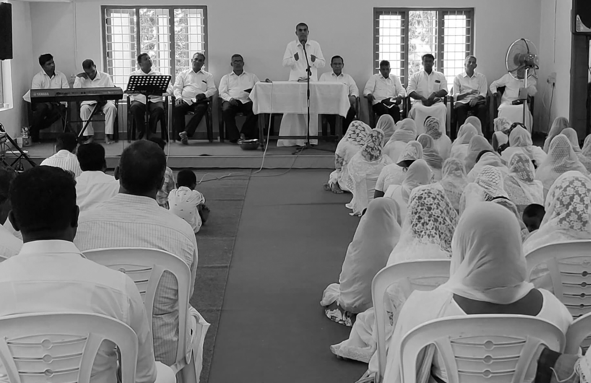

We are dedicated to offering perfect solutions through our Gospel Services.
At our organization, we take immense pride in offering a diverse range of services meticulously designed to address the spiritual and communal needs of our congregation. Our Praise and Worship sessions stand as a cornerstone of our services, bringing together members of our community to celebrate and uplift our faith through soul-stirring music and collective praise. These gatherings are not merely a ritual but a vibrant expression of our shared devotion and joy. For the younger generation, our Youth Meetings create a dynamic and engaging environment that fosters growth, learning, and fellowship, equipping them with a strong foundation for their spiritual journey. These sessions are crafted to resonate with the unique needs and experiences of youth, guiding them in their faith with enthusiasm and relevance. Our Fasting Prayer gatherings offer dedicated times for deep reflection and spiritual renewal, providing a space for participants to seek divine guidance and strengthen their connection with their faith through focused and heartfelt prayer. This practice of fasting and prayer is integral to our spiritual lives, helping us to navigate challenges and deepen our understanding of our faith. In addition, our Sunday School program is thoughtfully designed to nurture and educate our children from an early age, instilling in them the core values and teachings of our faith. This program aims to build a strong spiritual foundation for our young ones, ensuring that they grow up with a clear sense of purpose and direction. Together, these services represent a comprehensive approach to fostering spiritual growth, community building, and personal development. They reflect our unwavering commitment to creating a vibrant, supportive, and thriving faith community, where every member, regardless of age or background, can find encouragement, growth, and a deeper connection to their faith.

Praise and Worship
Every Sunday at 10 AM, we come together for a powerful and uplifting Gospel prayer service that forms a central part of our weekly worship. This dedicated time is an opportunity for our community to unite in heartfelt prayer, seeking divine guidance and strength through the teachings of the Gospel. As we gather in faith, our service is designed to inspire and encourage, reinforcing our commitment to living out the principles of love, compassion, and grace.

Cottage Meeting
Every Wednesday 7pm, we host a heartfelt
Cottage Meeting dedicated to the Gospel of Jesus Christ. This intimate gathering
provides a warm and welcoming space for members of our community to come
together in fellowship, share their experiences, and delve deeper into the
teachings of Jesus. Through thoughtful discussion, prayer, and reflection, we
explore the profound truths of the Gospel and how they can be applied to our
daily lives.

Fasting prayer
Every Friday's and Every month-end (2 Days), our community gathers for a special Fasting Prayer dedicated to the Gospel. This sacred time of fasting and prayer is an opportunity for us to come together in deep spiritual reflection and seek divine guidance for spreading the message of the Gospel.
Ladies Meeting
Every Tuesday at 11 a.m., we gather for a special Ladies' Meeting dedicated to the Gospel of Jesus Christ. This weekly gathering provides a nurturing and supportive environment where women can come together to delve deeper into their faith, share their spiritual journeys, and strengthen their connection with Christ.